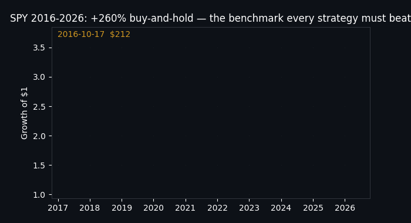
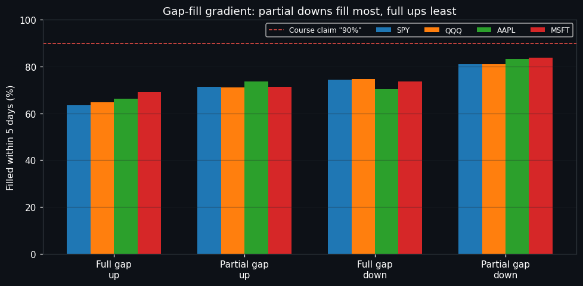
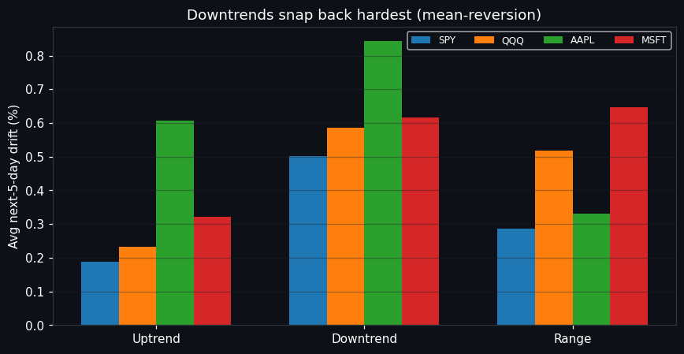
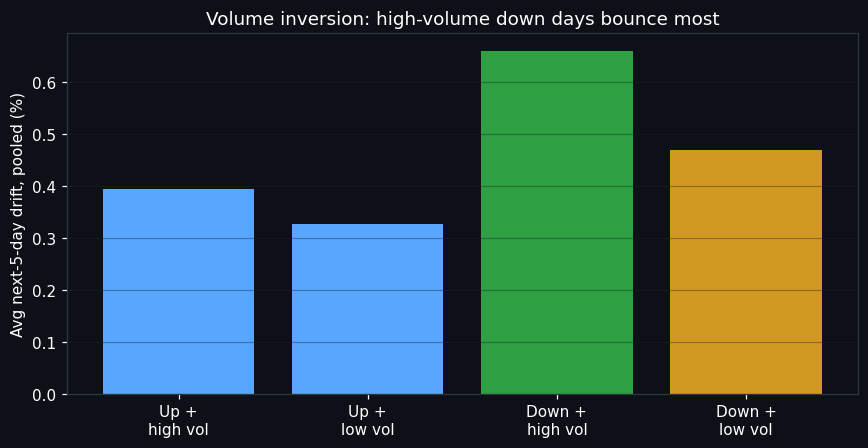
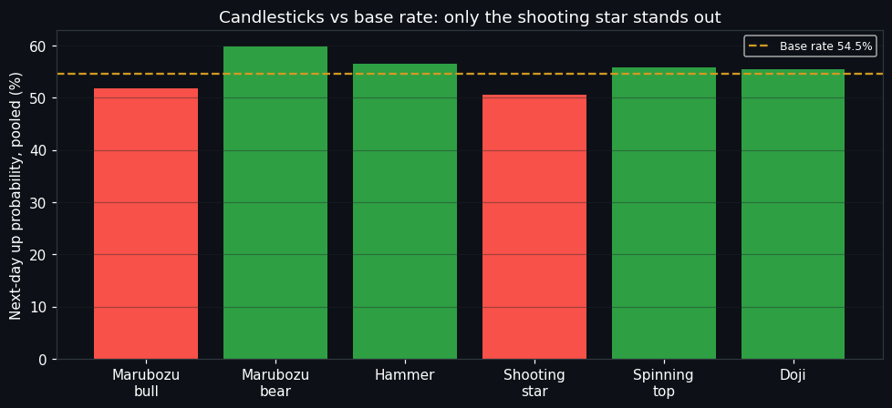

MIT License10,054 live bars11 experimentsPython 3.12Docker ready
Price Action Zero-to-Hero, Verified on Live Market Data
We took 14 famous trading-course claims, froze each one into code, added real trading costs, and tested them on ten years of real prices (2016–2026). Most claims failed. Four survived. Along the way the data revealed patterns the course never mentions.

▲ SPY 2016–2026: +260%. Every strategy in this repo must beat simply holding.
What works ✅ Breakouts after rising lows into resistance · pullbacks that wait for a confirmation candle · never fading the first bounce.
What fails ❌ "90% of gaps fill" (it's 63–84%) · candlestick rankings · raw pin bars · small-range inside bars at support.
What surprised us 🔬 Down days on huge volume bounce the most · downtrends snap back harder than uptrends drift · every breakout system pays a ~5% trap tax.
🧪 Verdicts — claim by claim
CONFIRMEDHigher lows into resistance break out Price breaks within 5 days 55–58% of the time vs 27–34% normally — on all four symbols.
CONFIRMEDWait for the rejection candle Pullbacks with confirmation: profit factor 2.28 vs 1.41 for blind touches.
CONFIRMEDDon't fade the first pullback Fading it loses money out-of-sample (profit factor 0.80).
REJECTED"90% of gaps fill" Real fill rates: 63–84%, always in the same order (see chart).
REJECTEDCandlestick rankings Hammers, marubozus and dojis predict nothing; only the shooting star leans bearish.
REJECTEDRaw pin bars & small-range inside bars Raw pins: PF 0.97 (coin flip). Small-range inside bars at value: PF 0.80.
INVERTEDThe volume doctrine Down-days on high volume — taught as "bearish" — bounce the most (+0.37% to +0.95% in 5 days).
NUANCEDBuildup beats chasing Calm breakouts (PF 1.15) beat power-move chases (PF 0.84), but the edge is thin.
📈 The evidence (real charts from the run)
Gap-fill gradient — the course slogan is wrong, the gradient is real

Downtrends snap back hardest

Volume inversion — capitulation bounces

Candlesticks vs the base rate

🌱 Beginner guide — read this and you trade like a professional
Finish this section and the quiz below and you will know more about what actually works than most interview candidates. Let's work this out step by step, from zero to pro:
Step 1 — Prices move in three ways. Up (higher highs and higher lows), down (lower highs and lower lows), or sideways. Everything else is decoration. Our code detects this with fractal swings — no opinions, just geometry.
Step 2 — Big players leave footprints. When buyers accept higher and higher prices into a ceiling (higher lows into resistance), price breaks out 55–58% of the time. That is the single most verified pattern in this study.
Step 3 — Support and resistance are zones, not lines. Prices turn inside areas about half an ATR wide. Drawing a razor-thin line and putting your stop one tick behind it is why beginners get "hunted".
Step 4 — Candles describe, they don't predict. A hammer tells you buyers fought back today. It says almost nothing about tomorrow (verified: ≈ base rate). Trade the reaction at a level, never the candle alone.
Step 5 — Volume marks exhaustion, not confirmation. The heaviest down-days bounce the hardest. Panic is loud; the bounce after panic is the trade, not the panic itself.
Step 6 — Confirmation is the cheapest edge in trading. Waiting one bar for a rejection candle lifted pullback profit factor from 1.41 to 2.28. Patience is a strategy with a measured return.
Step 7 — Costs and out-of-sample kill fantasies. Every backtest here pays commission + slippage and is judged on data it never trained on. Any "strategy" that skips this is a story, not a strategy.
🎯 Interactive quiz — from scratch to pro
Answer all 10. Each answer explains why, with the measured number. Score 8+ and you think like a professional quant.
👥 Who is this for? (user stories)
🎓 The self-taught trader "I finished a free course — what actually works?" Run the quiz, read the verdicts, steal the 3 confirmed setups and ignore the rest.
💼 The interview candidate "I need to sound like I understand backtesting." The beginner guide + limitations section teach lookahead bias, overfitting, IS/OOS and costs with real numbers.
🔬 The quant researcher "I need a baseline harness." Fork it: detectors in src/pa_bench/patterns.py, costed engine in backtest.py, 70/30 split runner in experiments/run_all.py.
👨🏫 The educator "I want a live demo for class." Open this page, play the GIF, run the quiz — zero installs, every claim linked to a number.
🛡️ The skeptic "Prove trading courses wrong." Every failure is published with n, win rate and p-values. Losers are losers here.
🧑💻 The open-source contributor "I want to extend it." Add a symbol CSV to data/, rerun one command, open a PR with your table. Crypto/FX slots are waiting.
🔁 Reproduce everything in 3 commands
docker compose up research
# or locally:
pip install -r requirements.txt
PYTHONPATH=src python3 experiments/run_all.py --symbols SPY,QQQ,AAPL,MSFT --range 10y
python3 -m pytest tests/ -q # 3 offline smoke tests
Outputs land in results/summary.json, results/table.csv, results/SUMMARY.md. Full paper: README.md. Method protocol: papers/METHOD.md. MIT licensed — use it for anything.
🌐 Web view (GitHub Pages)
This page is the file preview.html at the repo root — no build step, no dependencies, works offline. To publish it: push the repo to GitHub → Settings → Pages → Deploy from a branch → branch main, folder / (root) → Save. Your site goes live at https://<you>.github.io/<repo>/preview.html within a minute or two. Share that link anywhere.
❓ FAQ
So… can I get rich with the 3 confirmed setups?Probably not directly — edges are small after costs (profit factors 1.2–2.3) and this is daily-bar, educational research, not financial advice. The value is knowing what not to pay for.Why do down-days bounce?Mean-reversion on daily equities: panic exhausts sellers and the bounce follows: our DU cell (down + high volume) leads 5-day drift on all four symbols (+0.37% to +0.95%).What is a hikkake / trap tax?About 5% of bars are failed inside-bar breakouts that trap breakout traders. Any breakout system pays this base rate before costs — size positions accordingly.Can I add my own strategy?Yes: write a detector returning a boolean Series (signal at close t), pass it to backtest_signals, and the harness handles costs, OOS split and stats. See experiments/run_all.py E07 for the template.